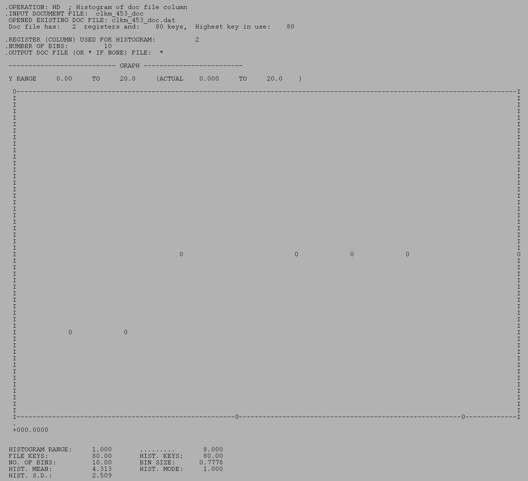
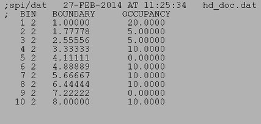

| .OPERATION: | HD | ; Histogram of doc file col |
| .INPUT DOCUMENT FILE: | clkm_453_doc | ; Doc file (input) |
| .COLUMN # USED FOR HISTOGRAM: | 2 | ; Second column |
| .NUMBER OF BINS. | 10 | ; 10 bins |
| .OUTPUT DOC FILE (OR * IF NONE): | hd_doc | ; Doc file (output) |
| 'HD' RESULTS FILE |
|---|
|  |
| hd_resu |
| 'HD' DOC FILE |
|---|
|  |
| hd_doc |